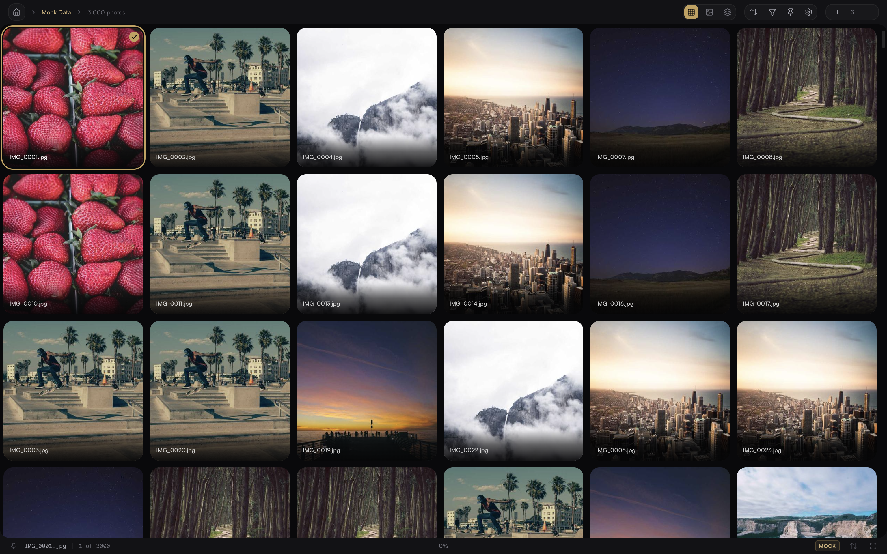
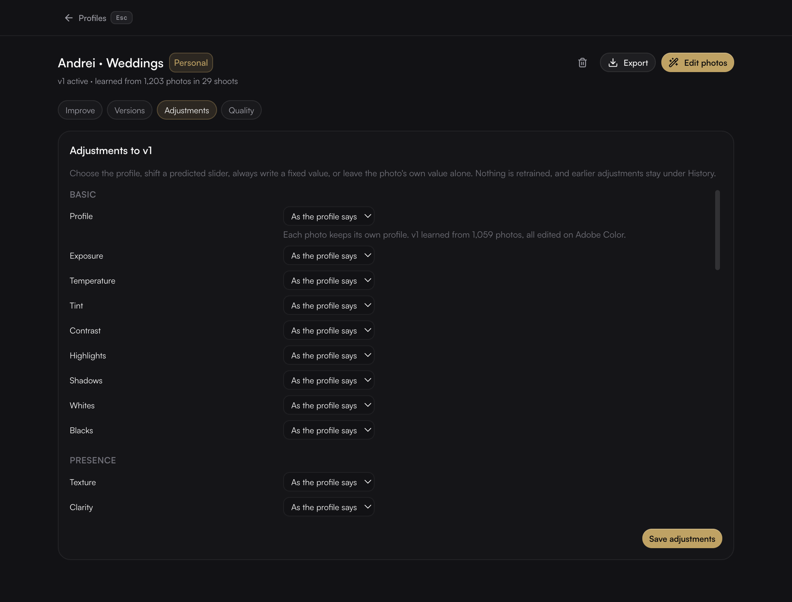

Bring it in
Start with your shoot.
Use Card Manager to review and copy memory cards to your chosen destinations. Open folders of RAW photos and common image files.
For the photographs worth keeping
Find the frames that matter. Prepare the details.
Give your shoot an edit that feels like you.
For macOS & Windows · Built for a Lightroom Classic workflow

A place for the whole first pass
From the memory card to the Lightroom handoff, keep the decisions moving in one desktop app.
Bring it in
Use Card Manager to review and copy memory cards to your chosen destinations. Open folders of RAW photos and common image files.
Find your keepers
Move between grid, scenes, and single-image review. Inspect faces, focus, and eye status; use stars, color labels, and pick/reject flags to narrow the shoot.
Keyboard navigation · Filters & sorting · Find by filename
Prepare the details
Crop and straighten before your Lightroom pass. In Remove mode, brush distractions, review auto-mark suggestions, and group touching marks into a single removal.
CullThing saves the instructions to XMP. Lightroom Classic generates the removal result.
Meet EditThing
Give the whole shoot a starting edit, then make the finishing touches your own.
Try a profile on a few photos, apply it across the shoot, fine-tune its behavior, and undo a run when you need to.
Processing happens locally. First-time setup downloads models and requires Adobe DNG Converter.

Keep your workflow
Ratings, labels, crops, and Remove instructions travel in XMP sidecars. EditThing can write develop settings to sidecars or work with an open catalog using the included Lightroom Classic plug-in.
Turn on Remote Access and pair a phone or tablet on the same network. Browse and cull a project or your library from that device's browser while the desktop hosts it.
Your next shoot starts here
Official desktop builds. Currently available for limited testing.
Latest published stable release
A little help getting started
Current test builds are ad-hoc signed and are not yet notarized by Apple.
Only approve a copy downloaded from the official release repository. The Open Anyway button is available for about an hour after the blocked launch. Full instructions & troubleshooting
Run the x64-setup.exe installer. Current test builds are not Authenticode-signed. If Microsoft Defender SmartScreen warns you, select More info, verify it is CullThing from this official repository, and select Run anyway.
The installer installs for your current Windows user. Full Windows instructions
Choose Check for Updates… from the application menu. The app prompts before installing an update and verifies the updater's cryptographic signature. You can also download the newest installer above.
Install Adobe DNG Converter and complete the model download during first-time setup. Start with a Lightroom preset for an Instant profile, or your edited photos for a Personal profile. Lightroom Classic is used to continue editing and to generate Remove results.